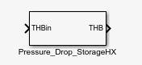
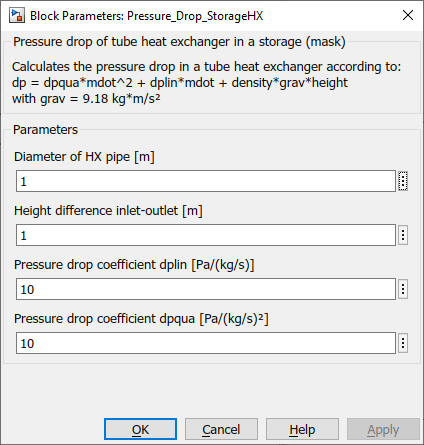

Pressure_Drop_StorageHX
Path: CARNOT/Basic/Pressure_Drop
Purpose
Calculate the
pressure drop of a heat
exchanger in a storage.
Description
Calculate pressure drop in a tube heat exchanger according to:
dp = dpqua*mdot^2 + dplin*mdot + density*grav*height
The whole heat exchanger is assumed to be at the inlet temperature for the calculation of the density.
Calculation is done for Flow_ID > 10000. Static height is included for Flow_ID > 20000 (see Pump_Main for details)
Inputs
THB
Outputs
THB
Parameters and Dialog Box

Characteristics
Direct Feedthrough Yes
Sample
time
Inherited
from driving block
Vectorized
No